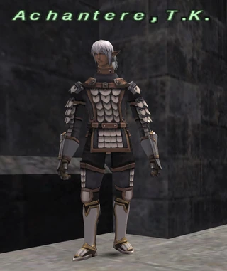
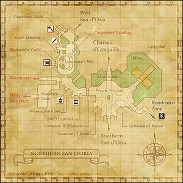

Description
Northern San d'Oria is a city area in San d'Oria.
Map

Involved in Quests / Missions
NPCs
| Name | Location | Type |
|---|---|---|
| Abeaule | (F - 8) | Quest Giver |
| Abioleget | (M - 6) | Quest Giver |
 Achantere, T.K.Image source | (C - 8) | Conquest Overseer; San d'Oria: National Guard |
| Ailbeche | (J - 8) | Quest Giver |
| Aivedoir | (F - 6) | — |
| Alphollon C Meriard | (L - 6) | — |
| Amarefice | (E - 3) | Recipe Giver |
| Andreas | (E - 3) | Guildworker's Union Representative |
| Anieuvansand | (I - 7) | — |
| Anilla | (J - 8) | — |
| Antonian | (J - 8) | Merchant of Aragoneau produce |
| Arachagnon | (F - 3) | RSE Merchant |
| Arienh | (I - 10) | — |
| Arlenne | (E - 4) | Merchant of weapons (club, staff, polearm, scythe |
| Arnau | (M - 6) | — |
| Attarena | (M - 9) | Merchant |
| Aurege | (F - 3) | Quest Giver |
| Bacherume | (J - 7) | — |
| Baraka | (K - 10) | — |
| Beadurinc | (E - 6) | — |
| Belgidiveau | (G - 8) | Quest Giver |
| Beriphaule | (C - 9) | Immigration NPC |
| Bertenont | (E - 4) | — |
| Boncort | (F - 8) | NPC Merchant |
| Calovour | (M - 6) | — |
| Capiria | (F - 6) | — |
| Castilchat | (E - 7) | Quest Giver |
| Cauzeriste | (E - 3) | Merchant |
| Chapal-Afal, W.W. | (H - 9) | Conquest Overseer; Windurst: Foreign Guard |
| Charlaimagnat | — | — |
| Charmealaut | (D - 8) | Merchant |
| Chasalvige | (L - 6) | — |
| Chaupire | (E - 3) | Merchant |
| Cheupirudaux | (F - 3) | Guild Master |
| Commojourt | (F - 5) | — |
| Coullene | (M - 6) | — |
| Danngogg | (K - 10) | — |
| Dapraugeant | (D - 7) | — |
| Dauperiat | (I - 10) | Quest Giver |
| Daveille | (D - 9) | — |
| Doggomehr | (E - 5) | Merchant |
| Elesca | (I - 8) | Map Dealer |
| Emeige | (I - 7) | A.M.A.N. |
| Emilia | (I - 10) | — |
| Eperdur | (M - 7) | Quest Giver |
| Esqualea | (L - 7) | — |
| Eugballion | (H - 8) | Merchant |
 ExcenmilleImage source ExcenmilleImage source | (D - 9) | Ballista Pursuivant |
| Fantarviont | (F - 7) | — |
| Fittesegat | (M - 6) | — |
| Galahad | (H - 10) | Consulate Representative |
| Gaudylox | (F - 4) | Merchant: Colored Chips |
| Giaunne | (I - 9) | — |
| Gilipese | (F - 7) | — |
| Greubaque | (G - 6) | — |
| Grilau | (C - 8) | — |
| Guilberdrier | (F - 3) | — |
| Guilerme | (I - 7) | — |
| Gulmama | (E - 7) | Quest Giver |
| Halaviabeau | (L - 6) | — |
| Helaku | (K - 10) | Consulate Representative |
| Heruze-Moruze | (H - 9) | — |
| Icoua | (L - 9) | — |
| Ishwar | (H - 10) | — |
| Jeanvirgaud | (L - 10) | Outpost Teleporter |
| Jufaue | (J - 10) | Past Event Watcher |
| Justi | (G - 8) | Merchant of Mog House Furniture |
| Kasaroro | (H - 9) | Consulate Representative |
| Kuu Mohzolhi | (F - 7) | Quest Giver |
| Letterare | (K - 9) | — |
| Lotine | (F - 5) | — |
 LucretiaImage source LucretiaImage source | (E - 5) | Merchant |
| Machella | (G - 8) | — |
| Macuillie | (E - 6) | — |
| Madaline | (K - 9) | — |
| Malfine | (M - 6) | — |
| Maloquedil | (J - 8) | Quest Giver |
| Maryse | E-5 /F-5 /E-6 /F-6 | — |
| Maurine | (M - 6) | — |
| Maurinne | (F - 5) | — |
| Mevaloud | (J - 10) | — |
| Mevreauche | (E - 6) | — |
| Miageau | (L - 7) | Quest Giver |
| Miaux | (E - 6) | Quest Giver |
| Millechuca | (L - 9) | Merchant of Vollbow Region produce |
| Morjean | (L - 7) | — |
| Morunaude | (G - 8) | Quest Giver |
| Mulaujeant | (E - 5) | Directions to Blacksmith Guild |
| Narcheral | (M - 6) | Quest Giver |
| Narsaude | (G - 8) | — |
| Nonterene | (I - 10) | — |
| Nouveil | (M - 7) | — |
| Olbergieut | (L - 6) | Quest Giver |
| Pagisalis | (M - 6) | Quest Giver |
| Pala Korin | (H - 9) | — |
| Palguevion | (F - 6) | Merchant |
| Pellimie | (M - 6) | — |
| Pepigort | (F - 3) | — |
| Phairupegiont | (H 8) | — |
| Phaviane | (I - 10) | — |
| Pikiki | (H - 9) | — |
| Pinok-Morok | (E - 6) | — |
| Pirvidiauce | (D - 8) | Merchant of medicine items, arrows, flowerpot |
| Pontaudarme | (H - 9) | — |
| Poseaulloie | (I-8 / J-8 / I-9 / J-9) | Harvest Festival Witch NPC |
| Prerivon | (M - 6) | — |
| Pulloie | (M - 10) | Opens Mog House for partied members |
| Pursuivant | (K - 9) | — |
| Ramua | (E - 3) | Recipe Giver |
| Rodaillece | (C - 8) | — |
| Rondipur | (F - 6) | Quest Giver |
| Ronpaurege | (K - 8) | — |
 SecodiandImage source SecodiandImage source | (F - 6) | Quest Giver |
| Shakir | (K - 10) | — |
| Shomo Pochachilo | (J - 9) | — |
| Sochiene | (J - 10) | — |
| Taurette | (F - 7) | — |
| Telmoda | (K - 8) | — |
| Tavourine | (E - 4) | Merchant of weapons: Dagger, Club, Axe, Great Sword |
| Ulycille | (E - 3) | Recipe Giver |
| Vamorcote | (F - 5) | Quest Giver |
| Vavegallet | (F - 8) | — |
| Vichuel | (F - 4) | Merchant: Fauregandi produce |
| Vilatroire | (C - 7) | Quest Giver |
| Villion | (F - 3) | crafting elements tutorial |
| Yevgeny, I.M. | (K - 10) | Conquest Overseer; Bastok: Foreign Guard |

NPCs and services
| NPC | Service |
|---|---|
| Matildie | Adventurer Coupon |
| Excenmille | San d’Oria Trust quest; D-9 |
| Jeanvirgaud | Outpost teleportation |
| Secodiand | Fear of the Dark |
NPC map locations
| NPC | Game-map location |
|---|---|
| Matildie | Northern San d’Oria (J-8) |
| Excenmille | Northern San d’Oria (D-9) |
| Secodiand | Northern San d’Oria (E-6) |
These instructions require Travel and Quest Clarity v1.0. The package is ready; installation and in-game confirmation have not yet been reported.
Story walkthroughs in this area
| Story | Mission / quest |
|---|---|
| CoP 3-3 | The Road Forks |
| CoP 3-3A | Emerald Waters — San d’Oria branch |
| CoP 5-1 | The Enduring Tumult of War |
| CoP 5-3U | Where Messengers Gather — Ulmia’s Path |
| ToAU 5 | Confessions of Royalty |
| WotG 41-1-2 | Her Memories: The Faux Pas |
References
External references describe their own server or retail rules. Documented Zenith changes take precedence.
Map credits: Map 1 — HorizonXI Wiki. Original game maps © SQUARE ENIX; redrawn maps retain the credited authorship and license.

Additional level-75 reference
|
With access to the Royal palace, otherwise known as the Chateau d'Oraguille, and the Cathedral, much of the Northern section of the Kingdom of San d'Oria has an open, spread out feel. The Parade Grounds in the center provides a spectacular area for the Kingdom's many festivals and a beautiful backdrop for the consulates which line its paths. The western part of the district, however, is distinctly different. Laborman's way, which houses the Blacksmiths' and carpenters' Guilds, remains in a perpetual state of construction. Unaware adventures should be careful, as certain nondescript doors lead directly to dangerous mob infested areas.
Connecting Areas
|
 |

Quests Started Here

Fishing
| All Watersides | Cap |
|---|---|
| 7 | |
| 11 | |
| 27 | |
| 56 | |
| 0 | |
| 0 | |
| 0 |
NPCs Found Here
|
|
Adapted from Eden Wiki: Northern San d'Oria · Contributors and history · CC BY-SA 4.0. Revision 45607. Layout, links and optional background text adapted for Zenith.